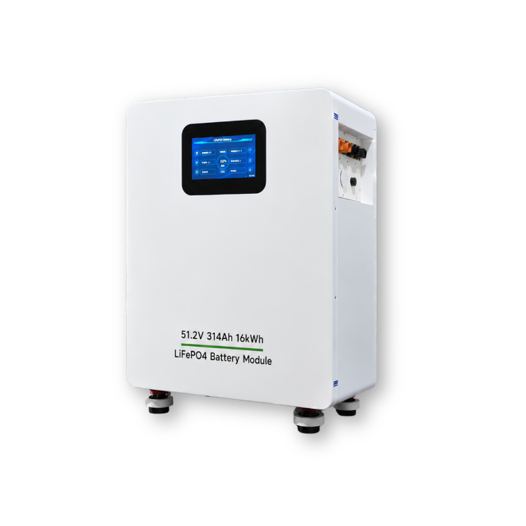
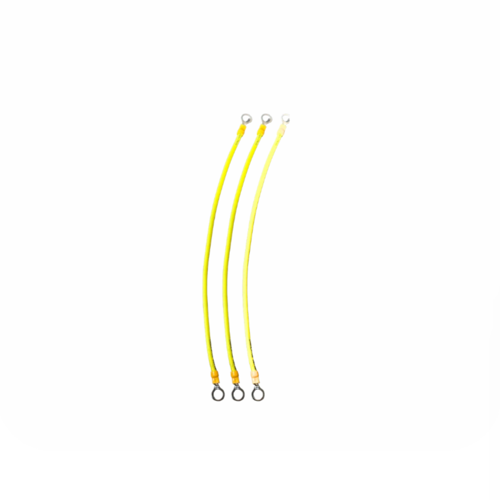
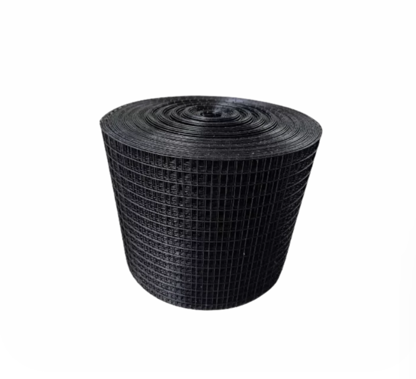
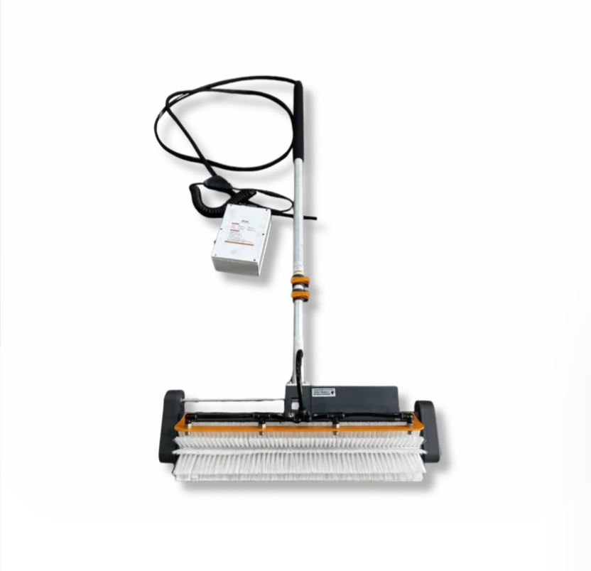
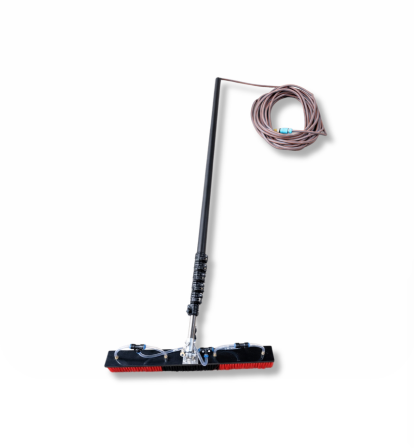

MT Power Cube 16K
แรงดันไฟฟ้า : 51.2 V
ความจุแบตเตอรี่ : 314 Ah
พลังงานรวม : 16 kWh
แบตเตอรี่ : LiFePO₄

สายกราวน์
: ระบายกระแสไฟรั่วและแรงดันไฟฟ้าเกินสู่ดิน
: ป้องกันอุปกรณ์จากไฟกระชากและฟ้าผ่า

ตาข่ายกันนกโซลาร์ ASL 6 นิ้ว ×30 เมตร
สี : ดำ
ขนาด : 150 × 30,000 มม.
ความยาว : 30 เมตร/ม้วน

ชุดขาตั้ง Inverter / ตู้ไฟ
โครงสร้างหลัก : เหล็กกล่อง (Square Steel Tube)
ผิวงาน : ชุบกัลวาไนซ์กันสนิม
.png)
Breaker Chint NXB-63 C50(2P)
Breakering Capacity : 6kA
Standard : IEC60898-1
Rated Voltage : 400 V
Frequency : 50 Hz
.png)
Breaker Chint NXB-63 C63(2P)
Breakering Capacity : 6kA
Standard : IEC60898-1
Rated Voltage : 400 V
Frequency : 50 Hz
.png)
Breaker Chint NXB-63 C63(4P)
Breakering Capacity : 6kA
Standard : IEC60898-1
Rated Voltage : 400 V
Frequency : 50 Hz
.png)
กาวซิลิโคน ANTAS AT118 (500 ml.)
: ปริมาณ 500 ml.
: เนื้อกาวยืดหยุ่นสูง
: ทนความร้อนและ UV
.png)
กาวซิลิโคน LT-998 (500 ml.)
: ปริมาณ 500 ml.
: กันน้ำ 100%
: ยึดติดแน่น ทนแดด ทนฝน
: ป้องกันหลังคารั่วซึมระยะยาว

Automatic solar panel cleaning kit
แรงดันไฟฟ้า : DC (ผ่านกล่องควบคุม)
ระบบขับเคลื่อน : มอเตอร์ไฟฟ้า
ความยาวด้าม : ปรับระดับได้ (เหมาะกับงานที่สูง)

Manual solar panel cleaning kit
ความยาวด้าม : ปรับได้ประมาณ 2–6 เมตร
ความกว้างแปรง : ประมาณ 30–60 ซม.
ระบบน้ำ: ต่อเข้ากับสายยางทั่วไปได้

Complete Vehicle
• รุ่น: YX-1360A
• ความกว้างแปรงหลัก: 490 มม.
• ความเร็วการเคลื่อนที่: 0-14 กม./ชม.
• ถังเก็บน้ำ: 80 ลิตร